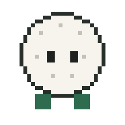
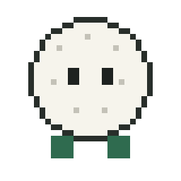
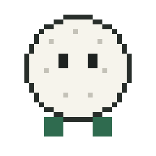

The blocks, live.
Everything animated in the library, old and new, running —
not screenshots of it. A still of an animated block is the most common complaint, and a stale
still also freezes whatever the plate looked like the day it was shot, which is how the retired
graph-paper grid stayed on screen for weeks after it was killed. These iframes always show the
block as it is now. Every block takes ?seek=<s> and is rendered to
mp4 with scripts/block-render.py before it goes in a cut.
sessions-grid
NEW 4 variantsReal session windows. Use this whenever the line is about sessions — the SESSIONS are the UI and the mascot is only what tends them.
page-highlight
NEW 3 variantsA real page as a true 9:16 frame with the marker on the real words. One mark at a time. Shoot the page with scripts/shoot-page-9x16.py.
sessions-hub
3 variantsMascots as the endpoints of a wire. Good for machines and hand-offs — but when the line is about SESSIONS, use sessions-grid instead.
ai-new-chat
5 variantsEvery assistant's new-chat screen through the SAME three-phase camera move, so cutting between two reads as one system. The composer always comes with its lockup.
skills-beat
2 variantsThe skills surface — the slash-command menu.
skill-folder
1 variantApple's file fan: files lift out of the mouth on their own arcs, fan, hold, drop back.
claude-new-chat
1 variantThe Claude new-chat screen rebuilt as DOM, so the camera can move through it.
article-highlight
RETIRED 1 variantSUPERSEDED by page-highlight.html — hardcoded screenshot, rects nudged by eye, browser chrome, and five marks at once. Kept only as the record.
mascot (platshållare)
24 animations · outline cutThe mascot is only ever the ACTOR — the thing tending, carrying, conducting or reacting. It is never the session, the model, the app or the file. Use the outline cut: a cream sticker border that survives any plate.






